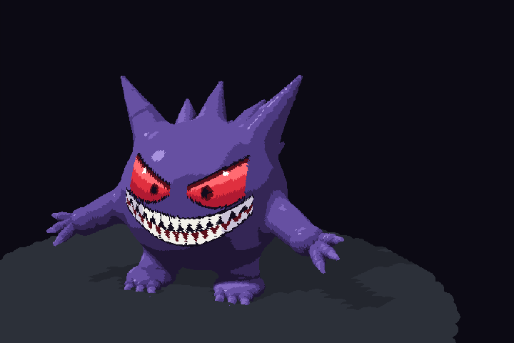
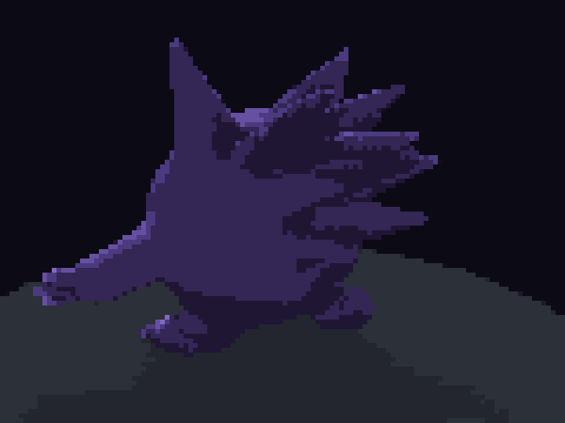

Picachu
Primeira versão: peças encaixadas, sorriso com grade de dentes e chão de grama com pedras.
Explorar em 3D →Fan art feita com a mesma técnica das cenas da torre. O corpo, as orelhas e os espinhos são formas esculpidas; os olhos e o sorriso são pintados direto na superfície. Duas versões, para comparar o antes e o depois.
arrastar gira · roda aproxima · botão direito move o foco

Primeira versão: peças encaixadas, sorriso com grade de dentes e chão de grama com pedras.
Explorar em 3D →
Membros fundidos ao corpo com curvas suaves, dentes triangulares encaixados, olhos com contorno e brilho, chão liso.
Explorar em 3D →Vídeos renderizados pelo Ink Studio, quadro a quadro. Um esqueleto simples move corpo, braços e pernas, e os efeitos são splats extras.
As duas versões usam o mesmo corpo e as mesmas proporções. A segunda foi refeita peça por peça para aguentar a câmera de perto. As imagens abaixo são do mesmo ângulo, renderizadas pelo Ink Studio.
res)detail)



| Parte | Versão 1 | Versão 2 |
|---|---|---|
| Corpo | Bola, orelhas, braços e pernas como peças separadas que se encostam. | Tudo vira um sólido só com S.join('round', corpo, peças, { r: 0.14 }): as junções ganham curvas suaves, sem emenda. |
| Olhos | Vermelho chapado com uma borda escura e pupila redonda. | Contorno preto, vermelho que clareia para cima, anel em volta da pupila, sombra de sobrancelha e um ponto de brilho branco. |
| Boca | Faixa branca cortada por uma grade de linhas. | Dentes triangulares de cima e de baixo, encaixados em zigue-zague; garganta escura e vermelha entre eles; dentes das pontas mais sombreados. |
| Espinhos | 7 cones retos. | 13 cones curvos (feitos com 3 pontos), incluindo espinhos menores entre os grandes. |
| Orelhas | Tubo de 3 pontos. | Tubo de 4 pontos, mais longo e curvado para fora. |
| Mãos e pés | Garras saindo direto da mão e do pé. | Dedos próprios (tubos) e dedos dos pés (bolinhas), com garras finas separadas e mais afiadas (res 0.022). |
| Rabo | Curva de 3 pontos. | Curva de 4 pontos, mais enrolada. |
| Pele | Uma cor por tom de luz. | Leve variação de ruído no tom (mod) e um brilho pequeno onde o sol reflete (gloss). |
| Chão | Grama com relevo e 9 pedras. | Disco liso cinza-escuro, em dois tons, para não competir com o personagem. |